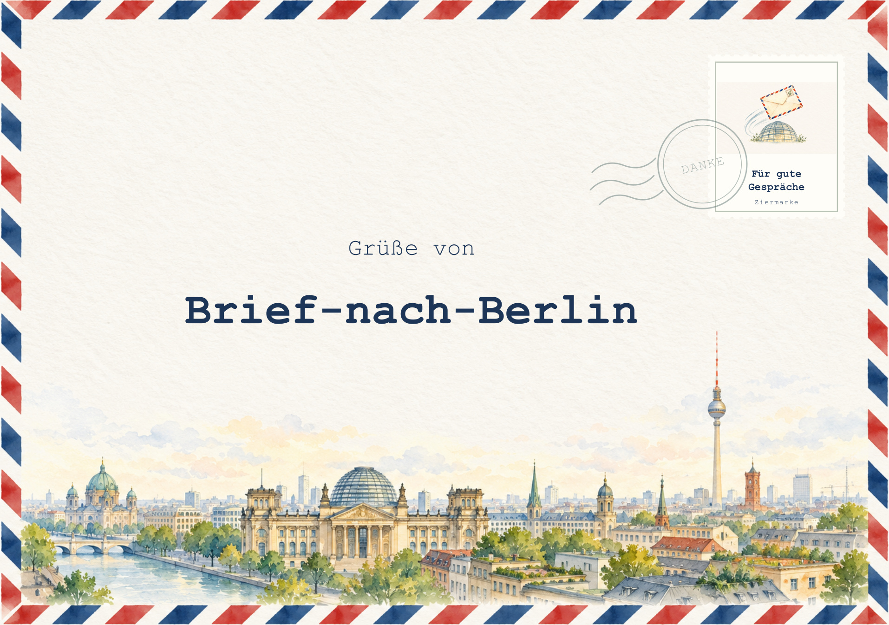
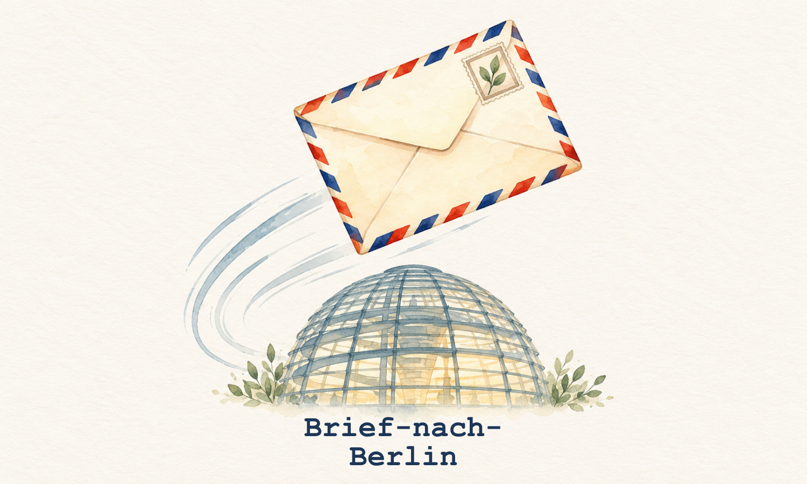

Bei 100 % / tatsächlicher Größe drucken, ohne Seitenanpassung. Das Cover misst 162 × 114 mm. Die Marke unten ist eine beispielhafte 40 × 24-mm-Probe, keine bestätigte Shop-Motivfläche.

Briefmarkenmotiv: Größenprobe 40 × 24 mm, Shopformat noch offen.
